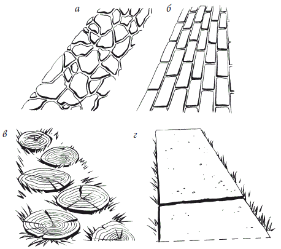

Дороги и дорожки.

Очарование знаменитых усадеб и замков мира заключается не только в прекрасных постройках, изысканных цветниках, живописных композициях из деревьев и кустарников, но и в красоте дорожек, разных по очертаниям, способам устройства, рисунку, цвету и фактуре используемого материала.
Прокладка и выбор материала для пешеходных дорожек весьма важны, поскольку они часто становятся важной составляющей частью ландшафта, придавая загородному дому неповторимый шарм и дополняя стилевую направленность декора.
Дорожки отличаются большим разнообразием, однако не стоит злоупотреблять их количеством – прокладывать следует только там, где без них нельзя обойтись. При этом любую дорожку можно превратить в настоящее произведение ландшафтного искусства.
Виды и стили садовых дорожекВнешний вид дорожек должен соответствовать стилю участка – регулярного или ландшафтного. Если дом построен в стиле определенной исторической эпохи, то садовые дорожки желательно также оформлять в соответствии с этим направлением. Так, для классического стиля характерны симметричные мощеные дорожки и внутренние дворики правильной формы. Англия XIX в. прославилась простыми тропинками, посыпанными галькой, вместо лестниц и мостиков – уложенные в поперечном направлении бревна. Для средиземноморского стиля характерны дорожки из вмурованных в цементный раствор мелких речных камушков, перемешанных с галькой. В садах Востока принято скрывать среди зелени и ярких цветов тропинки замысловатой, причудливо извивающейся формы. Нередко такие дорожки представляют собой несколько «утопленных» в землю плоских камней большого размера. Все эти стилевые направления можно встретить в наши дни, и в соответствии с ними нужно правильно оформлять не только подъездные дороги, но и садовые тропинки.
У дома, окруженного приусадебным участком, все дорожки условно можно разделить на 2 группы:
– основную дорогу, которая ведет от ворот к главному входу. Зачастую она объединена с подъездом к гаражу. Как правило, основную дорогу выкладывают из прочного материала – кирпича, асфальта или бетона. Подъездная дорога, помимо утилитарной, выполняет и декоративную функцию, поскольку въезд в дом – это первое, что бросается в глаза. Подъездная дорога должна быть достаточно широкой, поскольку предназначается не только для гуляния, но и движения четырехколесного транспорта;
– сеть дорожек и тропинок, соединяющих различные функциональные зоны, строения и отдаленные уголки. Небольшие дорожки обычно выполняют из недорогих строительных материалов – дерева, гравия, плиток или же просто хорошо утрамбованной земли. Для дорожных материалов лучше использовать природные пастельные цвета – кремовые, коричневатые и сероватые. В некоторых случаях допустимы дорожки кричащих расцветок, но только при условии, что они вписываются в общий дизайн участка. Обычно в ширину второстепенные дорожки должны быть не уже 60 см и не превышать 1,5 м. Их можно использовать для одиночных прогулок, а также для движения двухколесного транспорта или рабочих тележек.
Асфальтовые дорожки
Асфальт – это каменная крошка, связанная гудроном или битумом. Его используют, когда нужно создать главную подъездную дорогу, чаще всего в том случае, если она ведет от ворот к гаражу. Для мелких тропинок, разбросанных по участку, использовать этот материал нецелесообразно. Асфальт укладывают в горячем или в холодном виде. Первый вариант более экономичен, поскольку горячий асфальт стоит дешево и служит достаточно долго. В горячем виде асфальт расстилают на основание из среднезернистого песка толщиной 10 см и гравия толщиной 12 см. После этого асфальт разравнивают слоем в 4 см. Чтобы добиться крапчатого эффекта, нужно засыпать поверхность белой или любой другой каменной крошкой, после чего укатать дорожными катками.
Гравийная дорожка
Гравийная дорожка – самый дешевый и легкий в устройстве материал для подъездных дорог и дорожек, которые устраивают в самых отдаленных уголках участка. Повсюду гравийные дорожки радуют глаз своей естественностью и декоративными качествами.
Гравий можно использовать также в качестве подсобного материала при строительстве дорожек из крупных бетонных или каменных плит. В этом случае его рассыпают между отдельными камнями, придавая дорожке природный вид.
Создать дорожку любой формы посильно каждому. Вариант первый: подготовить основание, для чего утрамбовать почву и выложить высокие бордюры из камня или кирпича.
Если бордюров не будет, то сыпучее покрытие «сбежит» с дорожки на близлежащие цветники и газон. Создав «обрамление», можно насыпать слой гравия толщиной 10–12 см.
Другой вариант: выкопать траншею глубиной 15–20 см, выстлать ее перфорированным полиэтиленом, после чего заполнить гравием. В этом случае потребность в бордюрах отпадет сама собой. Гравий можно использовать в смеси с другими природными материалами:
– в виде песчано-гравийной смеси;
– в виде глиняно-гравийной смеси, которую затем во влажном виде нужно раскатать дорожным катком для получения жесткой поверхности.
Дорожки из гальки
Галька – прекрасный материал, используемый в ландшафтной архитектуре. Этот продукт многолетнего «труда» морских волн и бурных речных потоков широко используется для украшения участка, поскольку обладает неисчерпаемыми возможностями. При оформлении дорожек гладкие овальные камешки можно укладывать по своему усмотрению: горизонтально, вертикально, в виде эллипса. Камешки, обточенные морскими волнами, можно монтировать очень тесно друг к другу, образуя единый цельный ковер, или с интервалами, создавая прерывистые дорожки. В качестве связующего для разноцветной гальки служит высококачественный цемент, который также является контрастным фоном для нее.
На участках с перепадом высот в несколько метров галька выполняет функции крепления наклонных или вертикальных подпорных стенок, ступеней лестниц. Не менее интересна галька при отделке фасада и цоколя дома.
Мощеные дорожки
Мощеные дорожки уместны в первую очередь там, где из кирпича выложены внутренний дворик и (или) цоколь жилого дома. Обычно этот материал используют только для устройства основной подъездной дороги.
Для мощения предназначен специальный дорожный кирпич, так называемый дорожный клинкер. Его также называют «камень для мощения». Клинкер имеет шероховатую поверхность и отличается от обыкновенного кирпича толщиной: она составляет около 4 см. Помимо простых прямоугольных блоков, существуют и фигурные – зигзагообразные и волнистые. Весьма богата цветовая гамма данного дорожного материала. Достоинства блоков: они достаточно легкие, их несложно укладывать. Главный недостаток – дороговизна данного строительного материала. В связи с этим в нашей стране дорожный кирпич долгое время не получал широкого распространения, однако в наши дни его стали использовать значительно чаще.
Мощение отличается от кирпичной кладки тем, что при укладке используют только один ряд кирпичей. Существует несколько видов мощения: ложковая и кафельная перевязки, кольцевая укладка, перевязка «в шашку», «елочкой» или «в плетенку». Ложковая перевязка совпадает с кирпичной кладкой стен, то есть на середину кирпича одного кладочного ряда приходится стык 2 кирпичей следующего ряда. Кафельная перевязка – это кладка без перевязки швов. При перевязке «елочкой» или «в плетенку» 2 смежных кирпича укладывают под прямым углом друг к другу. Кольцевая укладка используется для круглых внутренних двориков.
Способы мощения. Камень для мощения укладывают 2 способами: всухую (на песок) и на раствор. Для клинкера толщиной более 35 мм обязательно устройство песчаной подушки. Краевые кирпичи обычно сажают на раствор, который образует надежный бордюр. При сухом (иначе его называют мягким) мощении кирпичи плотно укладывают на песчаную подушку, швы между ними засыпают сухой цементно-песчаной смесью или песком, после чего обрызгивают поверхность водой.
«Жесткое» (с использованием раствора) мощение напоминает обыкновенную кирпичную кладку. Раствор при этом наносят на грань самого кирпича или на постель (место кладки). Кладочным раствором или сухой цементно-песчаной смесью (как в случае с «мягким» мощением) заполняют швы между отдельными кирпичами, затем поверхность увлажняют. Состав кладочного раствора следующий: 1 часть цемента, 4–5 частей среднезернистого песка (иногда с добавлением извести). Приготовленный раствор необходимо использовать в течение 2 ч. Кирпичную дорожку устраивают поверх подготовленного основания, для чего грунт хорошо утрамбовывают и засыпают ровным слоем песка толщиной 2,5 см.
Под песчаную подушку при «жестком» мощении лучше постелить полиэтиленовую пленку, которая будет препятствовать прорастанию травы. После укладки кирпича выступающие края полиэтиленовой пленки обрезают. При «мягком» мощении от пленки желательно отказаться, поскольку она будет мешать естественному осушению грунта, а это может привести к просадке.
Мощеную дорогу, ведущую к гаражу, устраивают поверх основания из цементного раствора, однако в данном случае одной песчаной подушки будет недостаточно. В этом варианте необходимо вырыть траншею глубиной 15 см и утрамбовать ее дно, после этого последовательно выложить три слоя основания: самый нижний – из бутового камня, второй – из смеси, состоящей из 3 частей песка и 1 части извести, и самый верхний – из цементного раствора, на который укладывают кирпичи или бетонные плиты. Толщина нижнего слоя должна быть не менее 8 см, среднего – 2,5 см, а нижнего – около 3 см. Цементный раствор замешивают из расчета: 1 часть цемента, 1,5 части извести и 5 частей песка. По бокам дорожки устраивают бордюр из кирпича, поставленного на ребро, или насыпают землю.
Бетонные монолитные дорожки
Бетон – один из самых популярных материалов, используемый для дорожек и подъездных дорог. Он долговечен, недорог, подходит для создания дорожек любой формы и если залит правильно, то не требует особого ухода. Некоторые отказываются от его использования, считая несколько простецким и унылым. Однако эти проблемы можно решить, декорировав бетонную поверхность.
Бетон для каждого конкретного случая подбирают определенного свойства: для подъездных дорожек с интенсивным движением готовят высокопрочный бетон, для узких садовых дорожек он может быть низкой прочности, для лестниц, порогов и внутренних двориков – среднепрочный.
Способов создания цветного бетонного покрытия различных оттенков существует несколько. Первый: использование цветного цемента для приготовления бетонной смеси. Второй: добавление в бетонный раствор красителя: на 1 м бетонной смеси нужно 5–15 кг красителя. Третий: железнение, то есть нанесение на поверхность бетона пасты, которую готовят из 2 частей цемента и 1 части красителя. Пасту втирают во влажную бетонную поверхность при помощи деревянной или железной терки. Четвертый: посыпание влажного бетона сухим красителем с последующим разглаживанием поверхности штукатурной теркой. Для этого 150–250 г красителя используют на 1 м бетонной поверхности.
Также вид бетонной отделки можно изменить при помощи приспособлений. Ровную поверхность создают при помощи штукатурной терки, шершавую – при помощи грубой железной щетки. Используя специальные инструменты, выполняют нарезку – имитацию кирпичной или каменной кладки. Для того чтобы поверхность имитировала старину, во влажный бетон втирают немного кефира или йогурта. Благодаря этому дорожка быстро покрывается мхом и лишайником. Дорожки также облицовывают керамической плиткой, мрамором или слегка вдавливают во влажный бетон с помощью штукатурной терки гальку или гравий. Такая дорожка станет не только более привлекательной, но и менее скользкой.
Прочность бетонной смеси контролируют увеличением или уменьшением доли цемента: чем больше цемента содержит бетон, тем он прочнее. Высокопрочная бетонная смесь состоит из 1 части цемента, 2–3 частей крупнозернистого песка и 3 частей щебня. Для менее прочного бетона понадобится смесь из 1 части цемента, 3 частей песка и 6 частей щебня.
Дорожки из природных каменных плит, булыжника и искусственного камня
В наши дни натуральный камень – один из самых дорогих природных материалов. C каменными плитами трудно работать, их тяжело укладывать, к тому же они относятся к дефицитным товарам. Возможно, поэтому его используют крайне редко.
К натуральным материалам, предназначенным для пешеходных дорожек, относят булыжник – круглые камни диаметром более 2,5 см. Булыжная мостовая выглядит достаточно декоративно, но для подъездной дороги не годится, поскольку ходить и ездить по таким настилам неудобно. Поэтому булыжник и каменные плиты применяют только как отдельные декоративные элементы при создании геометрических вставок – прямоугольных, круглых, квадратных.
В наши дни вместо естественных материалов (брусчатки, булыжника, мрамора, песчаника, сланца и известняка) используют плиты из искусственного камня, которые успешно их имитируют.
Искусственные плиты укладывают на дренажную подушку. Для небольших садовых дорожек подушку толщиной 10 см делают из песка, а для внутренних двориков и основательных дорожек более уместна подушка из грубого гравия толщиной 30 см, который покрыт тонким (до 10 см) слоем мелкого щебня. Дренажный слой разравнивают и тщательно утрамбовывают.
Мозаичное покрытие
Мозаика – изображение или узор, выполненный из однородных или различных по материалу частиц, одинаковых или разноразмерных фрагментов материала, плотно пригнанных друг к другу и скрепленных между собой и с грунтом вяжущим веществом. Мозаика возникла в античную эпоху и не утратила своей популярности в наши дни.
Мозаикой называют не только панно, массивы облицованной поверхности, но и сами мозаичные плитки. Они производятся из различных материалов – камня, дерева, стекла, керамики, смальты и т. д.
Плитки из мозаики по сравнению с бетонными или кирпичными блоками меньше размером, а потому укладывать их можно произвольно. Рисунок не требует точности и соблюдения прямых линий. При отсутствии готовых мозаичных можно использовать битые бетонные плиты или кусочки натурального камня толщиной до 5 см.
Техника укладки мозаики мало чем отличается от правил укладки бетонных плит: подготавливают «подушку», а на нее выкладывают сначала крупные мозаичные плиты, после чего пространство между ними заполняют мелкими камнями. Мозаику вжимают в песок, чтобы ни один камень не выступал над соседними. Все щели между камнями следует заполнить жестким раствором. Готовится он из расчета: 1 часть цемента и 4 части песка с добавлением небольшого количества воды.
Деревянные дорожки
Дерево – самый естественный природный материал и хорошо смотрится в любом ландшафте. Его достоинства: это вполне доступный по цене материал, не является дефицитным, хорошо сочетается с окружающей растительностью. К тому же форма дорожек и самого материала могут быть различными.
Чаще всего для деревянных дорожек используют твердые и мягкие сорта древесины в виде поперечных спилов стволов толстых деревьев. Смотрятся такие дорожки весьма симпатично. Толстые деревья разрезают поперек на пеньки-кругляши высотой 10–12 см и затем укладывают по типу «кочек» на расстоянии шага, через 30–50 см.
Очень популярны деревянные настилы. Дощатые настилы вполне по силам сделать самим, главное – заранее заготовить материалы. В качестве заготовок берут доски или специальные щиты размером 60 ? 60 см в деревянной раме. Укладывать их проще и привычнее, чем любой другой материал, но сначала следует приготовить песчаное основание. Доски прикрепляют шурупами или гвоздями к прочным деревянным лагам, предварительно уложенным на кирпичные опоры. Между досками оставляют зазоры в 6–12 мм.
Для деревянных дорожек достаточно часто используют бревна, пеньки или железнодорожные шпалы, которые выкладывают в продольном или поперечном направлении. Из шпал делают тропинки, лестницы, мостики и даже напольные покрытия во внутреннем дворике.
Дощатый настил может прослужить лет 20, а то и больше, если за ним правильно ухаживать. Прежде всего, деревянные заготовки следует обработать антисептиками. Недостаток деревянных дорожек заключается в том, что во время дождя они намокают и становятся скользкими. Чтобы сгладить этот изъян, деревянные дорожки рекомендуется присыпать песком, гравием или высаживать в швах траву. Деревянные тропинки обычно не соединяют жилой дом, хозяйственные постройки и особо посещаемые места, гораздо лучше они смотрятся в укромных, «всеми забытых» уголках сада (рис. 40).

Два правила при строительстве дорожек
Существуют два общих правила, которые следует выполнять при создании всех видов дорожек независимо от материала, из которого они изготавливаются. Это устройство уклона и дренажного слоя.
1. Устройство уклона. Он предотвращает заболачивание дорожек и образование луж на ступеньках. Широкие подъездные дороги и дорожки средней ширины должны быть уложены с небольшим уклоном (1: 40 или 1: 50), двусторонним или односторонним по направлению к дренажным канавам.
Садовые дорожки, которые соединяют различные зоны участка, также делают «горбатыми» или с небольшим уклоном в одну сторону. Правда, небольшие садовые тропинки можно делать без уклона. Длинные ступени из прочного материала должны иметь небольшой уклон наружу. Соотношение должно быть не более чем 1: 100.
2. Устройство дренажного слоя. Открытый дренаж в виде песчаного или песчано-гравийного слоя толщиной 10 см используется на супесчаных и суглинистых рыхлых почвах. Укладывается он под все садовые дорожки. Открытый дренаж в виде хорошо утрамбованной подушки из щебня, битого кирпича или бутового камня толщиной до 15 см применяется на тяжелых глинистых почвах, а также под каждой длинной ступенькой из прочного материала. Можно устроить закрытый дренаж в виде перфорированных или сделанных из пористой глины дренажных труб, закопанных в землю вдоль дорожек.
Декоративное оформление дорожек и площадки перед домомМощеные дорожки хороши тем, что на них всегда будет чисто, даже в ненастье. Однако длинное сплошное полотно может выглядеть скучно, поэтому его часто украшают, используя самые разные растения и цветы. Так, небольшие садовые дорожки можно оформить, высадив вдоль них бордюры и рабатки из низкорослых растений.
Рабатка
Рабатка (от нем. Rabatte– «грядка») – это прямоугольный вытянутый цветник-грядка, может быть односторонней и двусторонней. Обычно рабатку располагают вдоль дорожек, оград и строений, высаживая среднерослые и низкорослые многолетние декоративные растения. Очень длинную рабатку делают прерывистой. Вокруг рабатки можно устроить бордюр.
Бордюр
Бордюр (от франц. bordure– «край») – цветная полоса, узкое декоративное окаймление дорожек, камней, хозяйственных построек и других цветников. Бордюры высаживают из низкорослых долгоцветущих стелющихся или подушковых растений с красивой листвой. Нередко бордюры служат переходом от вертикального озеленения к горизонтальным посадкам.
Миксбордер (от франц. mixbordure– «смешанный край») – смешанный бордюр геометрической или свободной конфигурации. Устраивают миксбордеры обычно вдоль центральной дорожки. Эффектнее смотрится смешанный бордюр, когда между ним и дорожкой оставлена полоса газона шириной 50 см. Основу миксбордера составляют многолетние растения разных видов, неодинаковой высоты и цветущие в разные периоды. В пределах миксбордера культуры одного вида высаживают группами. Главное в подборе растений – группировка по высоте и срокам цветения. Еще одно условие, о котором необходимо помнить, формируя миксбордер: конец цветения одного вида должно приходиться на начало цветения другого. Для миксбордеров нельзя использовать быстроразрастающиеся растения, которые могут свести декоративное значение цветника на нет, вытеснив менее жизнестойкие виды. В односторонних миксбордерах на переднем плане высаживают низкорослые и стелющиеся виды, в центре – яркие и особо декоративные среднерослые многолетние растения, а на заднем плане – высокорослые растения. Плотность посадки растений в миксбордере должна вытекать из того, что многолетние растения находятся на одном месте несколько лет и им требуется некоторое время для разрастания. Поэтому первое время миксбордер может выглядеть несколько пустым. Прорехи можно заполнять однолетними растениями.